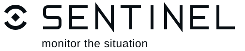
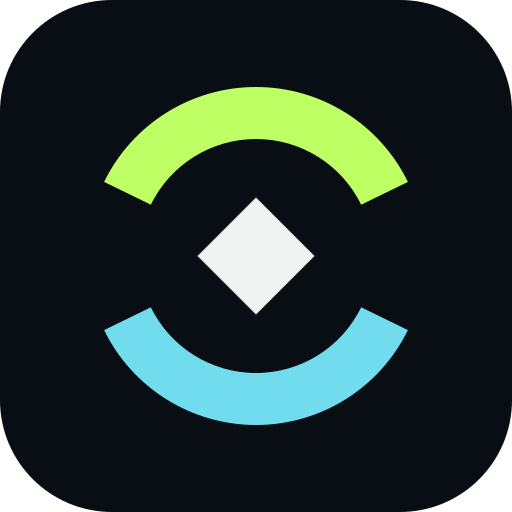
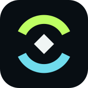
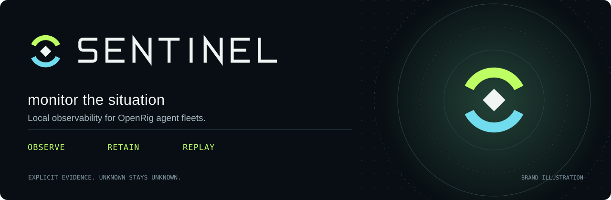
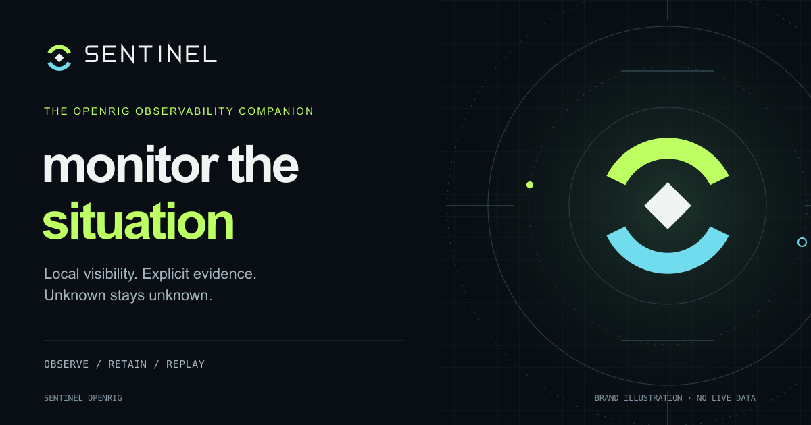

ORIGINAL IDENTITY · VERSION 1.0An open aperture.
Read the brand guideAn open aperture.
A clear signal.
SENTINEL — monitor the situation. The identity makes room for what is known and what remains unknown. These are brand assets, not live telemetry.
The signature



Light tagline lockup SVG
One recognizable geometry




A precise palette
Ink
#080e13
Signal lime
#beff63
Signal cyan
#70dced
Text
#f0f5f4
Muted
#a5b7bf
README banner



Social preview
